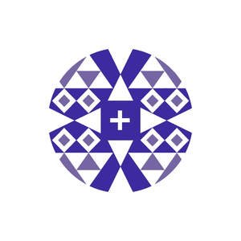
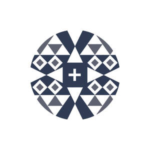
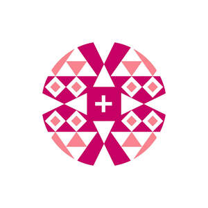
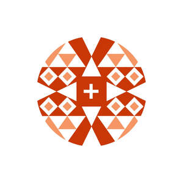

Trade Mark Journal No.2026/011 13 March 2026
UK00004339973 12 February 2026 (3,4,14,16,18,20,24,25,35,36,41)
Mark 1

Mark 2

Mark 3
Mark 4

Mark 5

Mark 6
- Class 3
- Scented wax melts; Lip balm; Lip balms; Cosmetics; Moisturisers [cosmetics]; Cosmetics and cosmetic preparations; Organic cosmetics; Lip cosmetics; Non-medicated cosmetics; Skin moisturizers used as cosmetics; Natural cosmetics; Beauty care cosmetics; Body creams [cosmetics]; Non-medicated cosmetics and toiletry preparations; Cosmetics for use on the skin; Cosmetic moisturisers; Cosmetic creams and lotions; Body and facial creams [cosmetics]; Body care cosmetics; Cosmetic creams; Cosmetic soaps; Skin creams [cosmetic]; Skin creams [for cosmetic use]; Moisturising skin lotions [cosmetic]; Cosmetic creams for the skin.
- Class 4
- Candles; Candles and wicks for candles for lighting; Tealight candles; Scented candles; Fragranced candles; Candles in tins; Perfumed candles.
- Class 14
- Jewellery; Necklaces [jewellery]; Bracelets [jewellery]; Necklaces [jewellery, jewelry (Am.)]; Fashion jewellery; Jewelry; Items of jewellery; Jewellery items; Jewellery products; Necklaces [jewelry]; Earrings; Silver-plated earrings; Pierced earrings; Hoop earrings; Gold-plated earrings; Clip earrings; Drop earrings; Necklaces; Bracelets; Bangle bracelets; Bracelets [jewelry]; Bead bracelets; Silver-plated bracelets; Ankle bracelets; Bracelets [charity]; Bangles; Bracelets of precious metal.
- Class 16
- Cards; Greeting cards; Greetings cards; Gift cards; Christmas cards; Birthday cards; Blank cards; Stationery; Paper stationery; Printed stationery; Printed matter.
- Class 18
- Purses; Handbags, purses and wallets; Coin purses; Cosmetic purses; Handbags; Small purses; Tote bags; Bags; Toiletry bags; Grocery tote bags; Makeup bags; Make-up bags.
- Class 20
- Cushions; Chair cushions; Seat cushions; Soft furnishings [cushions]; Yoga cushions.
- Class 24
- Textiles; Textiles and substitutes for textiles; Textiles for furnishings; Textile.
- Class 25
- Clothing; Headbands [clothing]; Clothes; Aprons [clothing].
- Class 35
- Retail services in relation to homeware; Retail services in relation to jewellery; Retail services relating to jewelry; Online retail services relating to jewelry; Online retail services relating to cosmetics; Retail services relating to clothing; Retail services in relation to bags; Online retail store services relating to cosmetic and beauty products; Retail services in relation to toiletries; Retail services connected with the sale of clothing and clothing accessories; Retail services in relation to hair products; Arranging promotion of charitable fundraising events; Retail services in relation to fashion accessories; Retail services in relation to clothing accessories.
- Class 36
- Charitable fundraising; Fund raising for charity; Charitable fundraising services; Charitable fund raising; Organisation of charitable collections; Fund raising for charitable purposes; Charitable collections.
- Class 41
- Training services relating to retail marketing; Conducting of classes; School services for the teaching of art; Arranging and conducting of classes; School services; Schools (Boarding -); Conducting of instructional, educational and training courses for young people and adults; Arranging of workshops and seminars; Conducting courses, seminars and workshops; Arranging of workshops; Arranging and conducting of seminars and workshops; Arranging and conducting of workshops and seminars; Conducting workshops and seminars in art appreciation; Conducting of workshops and seminars in art appreciation; Conducting workshops [training]; Arranging and conducting of workshops and seminars in self-awareness; Workshops for training purposes; Workshops (Arranging and conducting of -) [training]; Arranging and conducting of workshops [training]; Arranging and conducting of training workshops; Workshops for educational purposes; Arranging and conducting workshops; Arranging and conducting of workshops; Workshops for recreational purposes; Arranging of training courses; Training courses; Arranging and conducting of training courses; Organisation of training courses; Conducting of courses; Education; Health education; Education and training; Education and instruction; Education services; Education, teaching and training; Education (Religious -); Training and education services; Education and training services; Provision of education and training; Provision of training and education; Providing of education; Entertainment, education and instruction services; Adult education services; Education services related to the arts; Dietary education services; Guidance (Vocational -) [education or training advice]; Education services relating to business training; Educational and teaching services; Education in the field of occupational health and safety; Career advisory services (education or training advice); Provision of facilities for education; Education services relating to hygiene; Training; Coaching [training]; Training and instruction; Employment training; Training services; Organisation of training; Practical training; Training in catering; Providing of training; Providing training; Provision of training courses; Training courses (Provision of -); Instructional and training services; Provision of training; Career and vocational training; Continuous training; Adult training; Vocational skills training (Provision of -); Personal development training; Providing of continuous training courses; Provision of training courses in personal development; Providing of training, teaching and tuition; Recreation and training services; Practical training [demonstration]; Training related to nutrition; Career counselling [training and education advice]; Vocational guidance [education or training advice]; Arranging and conducting of entertainment events for charitable fundraising purposes; Arranging and conducting of educational events for charitable purposes; Arranging and conducting of sports events for charitable purposes; Arranging and conducting of entertainment events for charitable purposes; Social club services for entertainment purposes; Entertainment services in the nature of organizing social entertainment events; Provision of instruction for the disabled; Provision of training facilities for young people; Educational assistance services for persons with individual needs; Educational and instruction services relating to arts and crafts.
Artizan International